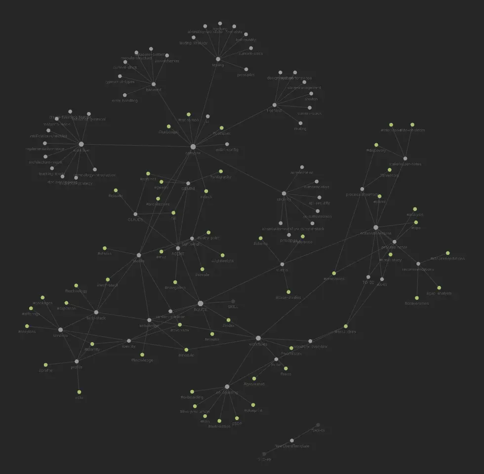

01
Business Process Analysis
I map how your business actually runs today — the manual steps, handoffs, and workarounds — before writing a single line of automation. You get a clear picture of where time is leaking.
Work (Systems)
01
I map how your business actually runs today — the manual steps, handoffs, and workarounds — before writing a single line of automation. You get a clear picture of where time is leaking.
02
I connect your existing tools and rebuild repetitive processes as automated workflows — onboarding, CRM updates, reporting, follow-ups — so they run without anyone touching them.
03
I build AI-powered assistants on top of your existing tools and data, for internal ops or client-facing work, using models like GPT and Claude.
04
I design and develop bespoke websites and internal dashboards tailored exactly to your operational needs. Blazing fast, zero bloat, and highly scalable architecture.
A production-tested post-deposit onboarding & business intelligence pipeline. Ingests 9-field client intake forms via n8n, executes a cold background web audit using Google Gemini AI, automatically provisions multi-tier Google Drive workspace folders, converts markdown briefs into binary files, and dispatches custom welcome emails & instant Telegram alerts.
Automated 100% of post-deposit client setup, generating workspace folders and AI briefs instantly.
Real-time operational dashboard tracking background queue workers, rate limits, and system alerts across server nodes.
An AI-agnostic Second Brain knowledge graph structured in Obsidian. Maps domain expertise, automates routine SOPs, and provides structured context vectors consumed seamlessly by Gemini, Claude, and custom local agents.

Eliminated context switching by turning personal SOPs and workflows into a machine-readable knowledge graph.
Featured Case Study
Read All Case Studies →How a custom n8n + API pipeline eliminated 20 hours a week of manual spreadsheet copy-pasting for a scaling sales team.